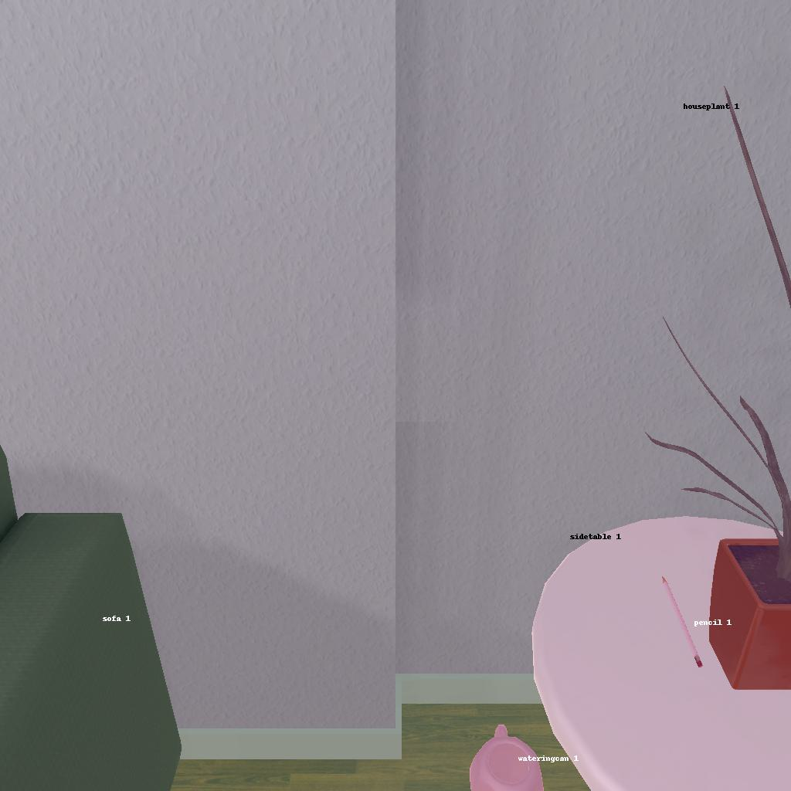
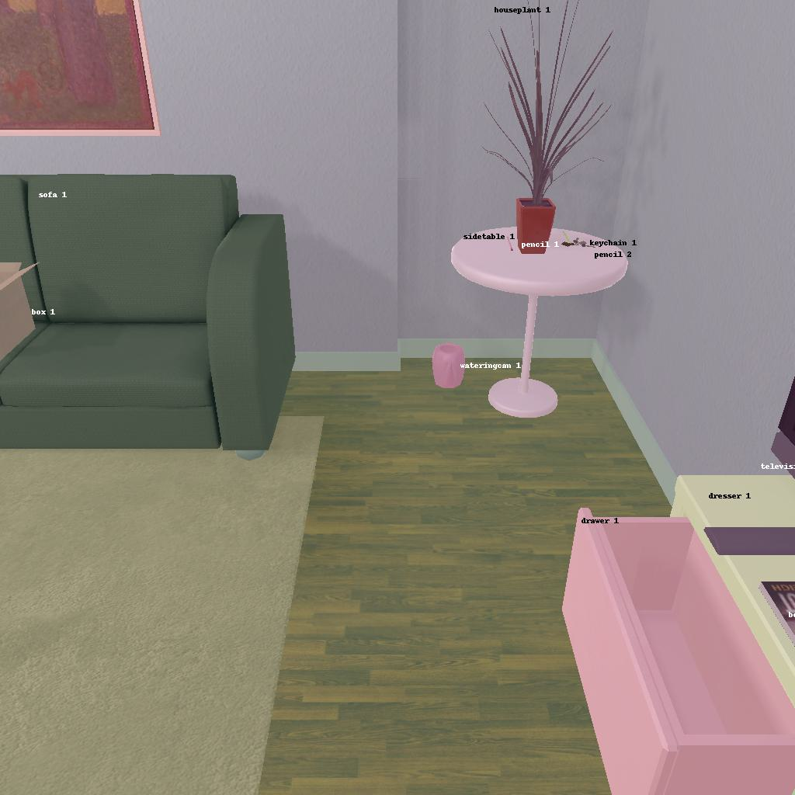

---------------------------------------------------------task: 5---------------------------------------------------------
--------------------------------------------------------------------------------------------------------------------------------------------------------------------
--------------------------------------------------------------------------------------------------------------------------------------------------------------------
Step:--------------------------------------------------------------------------6-------------------------------------------------------------------------------
----------------------------------------
VLM Prompt:
Image1:
Image2:
Image3:
**Instruction**
1. Analyze the provided image to identify all visible household objects, focusing on those relevant to the task description "put some book on armchair."
2. Use the analysis of the image and the task hint "The agent must find an object of the desired type, pick it up, find the correct location to place it, and put it down there." to answer the question: what is the most reasonable action in the choices for the task description "put some book on armchair"?
4. Decide and write the answer using the template: The answer is: (i): , where i is the real number. If there is no desired object in the image, search every place based on **Initial Observation** to find the object. And if no one is exactly correct, choose a similar answer.
**Initial Observation**
You are in the middle of a room. Looking quickly around you, you can see armchair (1), sofa (1), coffeetable (1), drawer (1-4), sidetable (1-3), dresser (1)
**Answer Choices**
(1): go to armchair 1
(2): go to sofa 1
(3): go to coffeetable 1
(4): go to dresser 1
(5): go to drawer 2
(6): go to drawer 3
(7): go to drawer 4
(8): go to sidetable 2
(9): go to sidetable 3
(10): close drawer 1
(11): take houseplant 1 from drawer 1
(12): take television 1 from drawer 1
(13): take box 1 from drawer 1
(14): take book 1 from drawer 1
(15): take wateringcan 1 from drawer 1
(16): take keychain 1 from drawer 1
(17): take pencil 1 from drawer 1
(18): take pencil 2 from drawer 1
(19): examine drawer 1
**Answer**
Let's think step by step by following the instructions.
----------------------------------------
----------------------------------------
Original Response:
The task is to "put some book on armchair." From the images provided, we can see an armchair labeled as "armchair 1" but no books are visible in any of the images. Therefore, we need to search for a book based on the initial observation, which suggests looking in drawers or dressers where such items might typically be stored.
The most reasonable action from the choices would be to first look for the book. Since drawers are commonly used to store small items like books, it's logical to start by examining the drawers. The action of examining drawer 1 seems to be the most relevant to finding a book.
The answer is: (19): examine drawer 1.
----------------------------------------
----------------------------------------
>>> Refine Original VLM Response and Get Pure Action: examine drawer 1
----------------------------------------
-----------------------------------------------------------------
Running time: 7.217466115951538 seconds
Total Money: 2.5819299999999994
-----------------------------------------------------------------
-----------------------------------------------------------------
Text Observation:On the drawer 1, you see a houseplant 1, a television 1, a box 1, a book 1, a wateringcan 1, a keychain 1, a pencil 1, and a pencil 2.
-----------------------------------------------------------------
UNSUCCEED